Казахстан
- 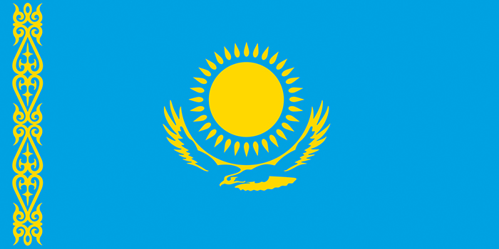
- 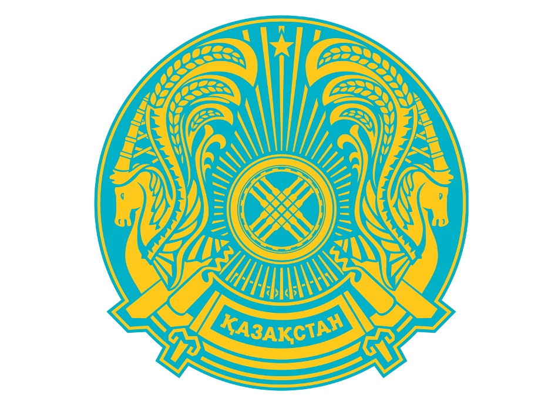
Краткая информация
-
Место: 9 (ТОП-10)
-
Площадь: 2 724 902 км²
-
Население: 19 246 300 чел. (1 июля 2022 г.)
-
Столица: Нур-Султан (Астана) (с 1997 г.)
-
Язык: Казахский, русский
-
Валюта: Казахстанский тенге, ₸ (KZT)
-
Крупнейшие города: Алма-Ата, Караганда, Шымкент, Павлодар, Усть-Каменогорск, Актобе, Семей, Тараз
Георафическое положение и границы
-

Казахстан на карте
-

Казахстан
Казахстан расположен в центре континента Евразия и занимает девятое место в мире по площади — 2724,9 тыс. км².
На востоке, севере и северо-западе Казахстан граничит с Россией, на юге — с Узбекистаном, Киргизией и Туркменистаном, а на юго-востоке — с Китаем, также на западе граничит с Ираном и Азербайджаном.
Граница Казахстана проходит по акватории Каспийского моря, затем по Приволжским степям, поднимается на север до южных отрогов Уральских гор, далее на восток вдоль Западно-Сибирской равнины до Алтая. На востоке граница проходит по хребтам Тарбагатая и Джунгарии, на юге — по горам Тянь-Шаня и Туранской низменности до Каспийского моря.
Казахстан 9-я страна в мире по площади, у которой юридически оформлены границы. Исключение составляет граница со стороны Каспия. Общая протяжённость границ Казахстана составляет 13 394,6 км
Часовые пояса Казахстана
Часовые пояса Казахстана. Территория Республики Казахстан разделена на два часовых пояса (официально – 4-й и 5-й) с действующим в них временем UTC+5 и UTC+6, хотя фактически она расположена в четырёх географических часовых поясах: UTC+3, UTC+4, UTC+5, UTC+6. Переход на летнее время отменён в 2005 году.
-

Часовые пояса
Климат
Климат Казахстана — на большей части территории резко континентальный, с большими амплитудами температур; относительно сухой. Среднегодовое количество осадков на большей части территории невелико — 100—500 мм. При этом особняком стоят среднегорные районы юга республики, где в результате температурных горно-долинных инверсий имеются обширные участки с относительно мягкими зимними условиями и большим количеством осадков, примером чего является климат Алма-Аты.
В северных областях Казахстана преобладает Западно-сибирская климатическая область умеренного климата с более влажным климатом (350-650 мм.), холодной (минимальная температура - –57,2° С) и продолжительной зимой (до 6 месяцев) и коротким, часто жарким летом (макс.+42° С). Весна короткая с резким перепадом температур, начинается в середине апреля и длится в среднем около месяца. В летнее время осадки выпадают в виде ливневых дождей, однако в отдельные годы, чаще всего в северных районах региона, осадки могут быть затяжными, а само лето холодным. В летнее время заморозки отмечаются в июне и августе. Осень сухая с ранними заморозками.
К югу от параллели 43° (в Казахстане это участки южнее линии Актау—Шымкент) климатологи выделяют в особый иранский субтропический район, в котором в целом доминируют хорошо прогретые массы сухого воздуха тропического происхождения. В субтропиках полностью расположены Мактааральский, Сарыагашский и Шардаринский районы ЮКО. Хотя зимняя погода в этой южной подзоне весьма неустойчива из-за периодического вторжения холодных северных масс и местных горно-долинныx явлений, она отличается средними положительными температурами в каждом из месяцев и высокими средними температурами в целом за год (от и выше). Самая высокая среднегодовая температура наблюдается на крайнем юге Казахстана, где она достигает +15,8 °С (Мырзакент, Атакент).
-

Казахстан летом
-

Казахстан зимой
Континентальность климата
К особенностям климата, характеризующим его континентальность, относятся: большая амплитуда между зимними и летними температурами, сухость воздуха, незначительное количество атмосферных осадков на большей части республики, продолжительная суровая зима и короткое лето на севере, и короткая зима и продолжительное жаркое лето на юге.
Географическое положение Казахстана в широтном отношении соответствует странам Средиземноморья, имеющим влажный субтропический климат, и странам центральной Европы, отличающимся умеренно континентальным климатом. Так как Казахстан расположен в центре огромного материка Евразия, на значительном удалении (на тысячи километров) от океанов и морей, то их смягчающее влияние на климат незначительно.
Страна расположена в южной части умеренного климатического пояса. На её территории чётко выражены четыре времени года. Зимой властвуют сильные сибирские морозы. Летом господствуют тропические воздушные массы, формирующиеся над Казахстаном и Центральной Азией. Континентальность климата выражается в сезонных амплитудах летних и зимних температур.
Природа
На территории Казахстана расположены четыре природные зоны: лесостепь, степь, полупустыни и пустыни. Рассмотрим их более подробно, чтобы отлично подготовится к уроку географии.
- Лесостепь
- Степь
-
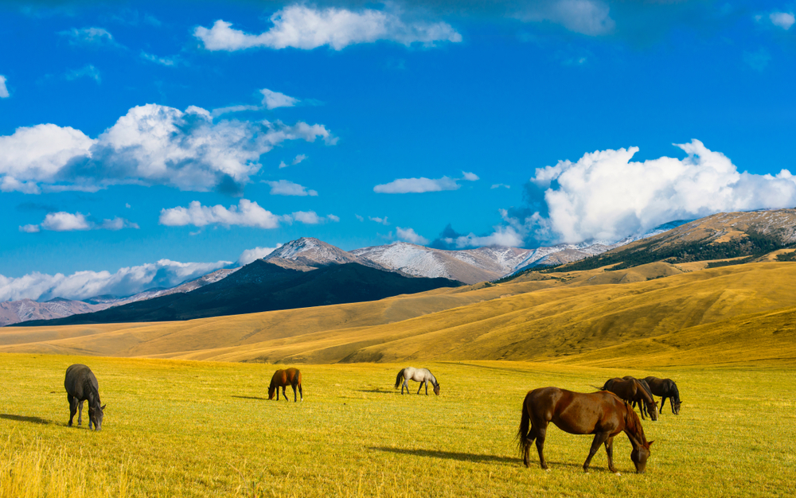
Лесостепь
-
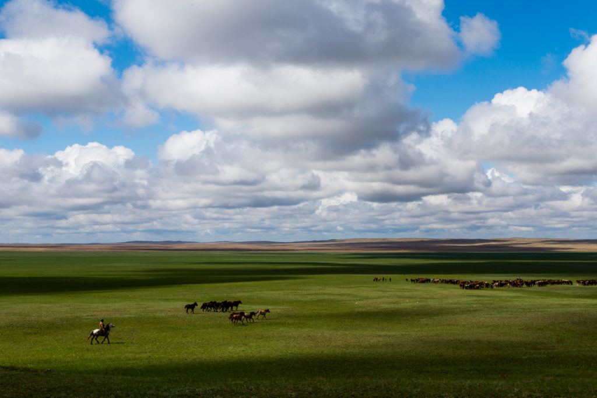
Лесостепь
- Полупустыни
- Пустыни
- песчаные: Кызылкум, Приаралье, Мойынкум, Каракум, Таукум, Сарыесик-Арытау, Муюнкум, Люккум, Бестас, Аралкум, Большие и Малые Барсуки, Жалкум, Жаманкум;
- глинистые: Бетпак-Дала, Голодная степь (Мирзачуль)
- каменистые: Сарыарка, восток Бетпак-Дала.
-
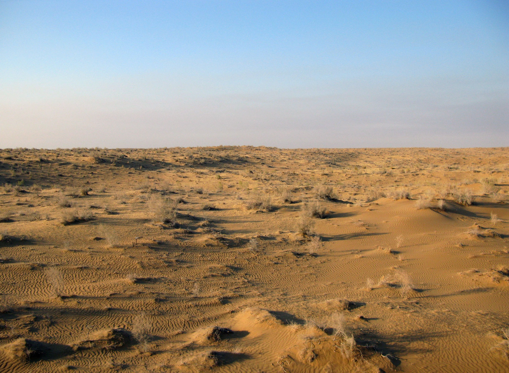
Пустыня Кызылкум
-
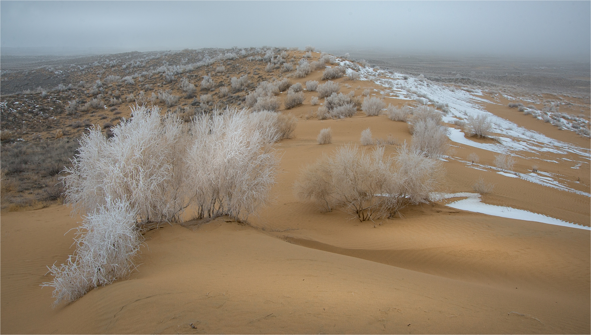
Пустыня Бетпак-Дала
Лесостепь расположена в северных районах и имеет самые благоприятные условия для проживания. Рассмотрим некоторые особенности: имеет островки зеленых насаждений, называемые колки; 370–430 мм. осадков в год; самые плодородные земли в стране: слой чернозема – 75 см, содержание гумуса – 9%.
Лесов в Казахстане очень мало. На юге страны их можно увидеть вдоль речных долин. На гранитных массивах Сарыарки и Каркаралы раскинулись сосновые боры. Неудивительно, что в этих местах находятся санаторно-курортные зоны.
Степь – это гордость Казахстана. Уникальный биологический комплекс сохранился в своем первозданном виде только в этой стране.
Поражает мир птиц. На различных озерах можно встретить самого необыкновенного представителя – розового фламинго.
Символ страны – ковыль, стелющийся по земле. Это не удивительно, ведь степная зона представлена разнотравьем: типчакового-ковыльным, полыно-типчаково-ковыльным. Характерные животные степи: сайгак, тушканчик, полевая мышь, лиса-корсак.
Полупустыни, как переходная зона между степью и пустыней, занимает 10% площади всей страны. Климат летом очень жаркий, зимой – сухой и холодный. Почвы светло-каштановые, малопитательные, содержание гумуса на уровне 2–3%. В низинах встречаются солонцы.
Растительность скудная. В основном засухоустойчивые травы: типчак, полынь, ромашка, кохия, збелек, терескен, лебеда.
Среди животных можно выделить хищников – хорьки и лисицы. Они имеют ценных мех. Грызуны – суслики, тушканчики, зайцы. Среди млекопитающих здесь обитают сайгаки и джейраны.
Основная деятельность в казахских степях и полупустынях — это овцеводство и коневодство. Огромные территории занимают бахчи.
Занимают широкую полосу (500–700 км.) от Каспийского моря до предгорий. Есть три вида пустынь:
Для пустынь Казахстана характерны явления такыр и сор. Такыр – это высыхание земли до такой степени, что появляются трещины, образуя мозаичный узор. Сор – это покрытое солью дно пересохшего водоема.
Крупнейшие озёра и реки Казахстана
В стране более 48 тыс. озёр, но только 6, чья площадь превышает 1,5 тыс. кв. км. В списке Каспий, Балхаш, Малый Арал, Алаколь, Зайсан и Тенгиз.
Из более, чем 85 тыс. рек лишь 5 имеют протяжённость свыше 1500 км. Это Иртыш, Ишим, Тобол, Урал и Сырдарья. Все перечисленные реки протекают через несколько стран, в Казахстане находятся частично. Большинство рек относятся к бессточным бассейнам крупных озёр. К бассейну Северного Ледовитого океана относятся приток Оби Иртыш и его притоки Ишим и Тобол.
Крупные реки и озёра страны находятся на периферии, в центральных районах большинство водотоков во время летней жары пересыхает.
Сырдарья — одна из самых длинных рек Казахстана — получила название «Королева Средней Азии».
Озёра
Рассмотрим 3 крупных водоёма республики.
Береговая линия Каспийского моря в Казахстане составляет 2340 км. Здесь расположены крупные курортные города Атырау и Актау. Лето сухое, жаркое (+35–40 °С днём, +25–27 °С ночью). Зима на северном побережье морозная, в Атырау температура опускается до –5–9 °С, в акватории Каспия появляются плавучие льды. В Актау зимняя температура не опускается ниже +2–3 °С, иногда достигает +16–20 °С.
Балхаш — озеро с различной солёностью в разных частях. В центральной части полуостров разделяет западную и восточную акватории, оставляя узкий пролив между ними. Западная часть — с пресной водой жёлто-серого оттенка из-за мутности. Восточная часть с солёной водой прозрачная, голубого цвета.
Озеро расположено в пустынных ландшафтах, количество осадков — 120–130 мм/год. Температура летом составляет +30 °С, зимой — –10 °С.
-

Озеро Балхаш
-
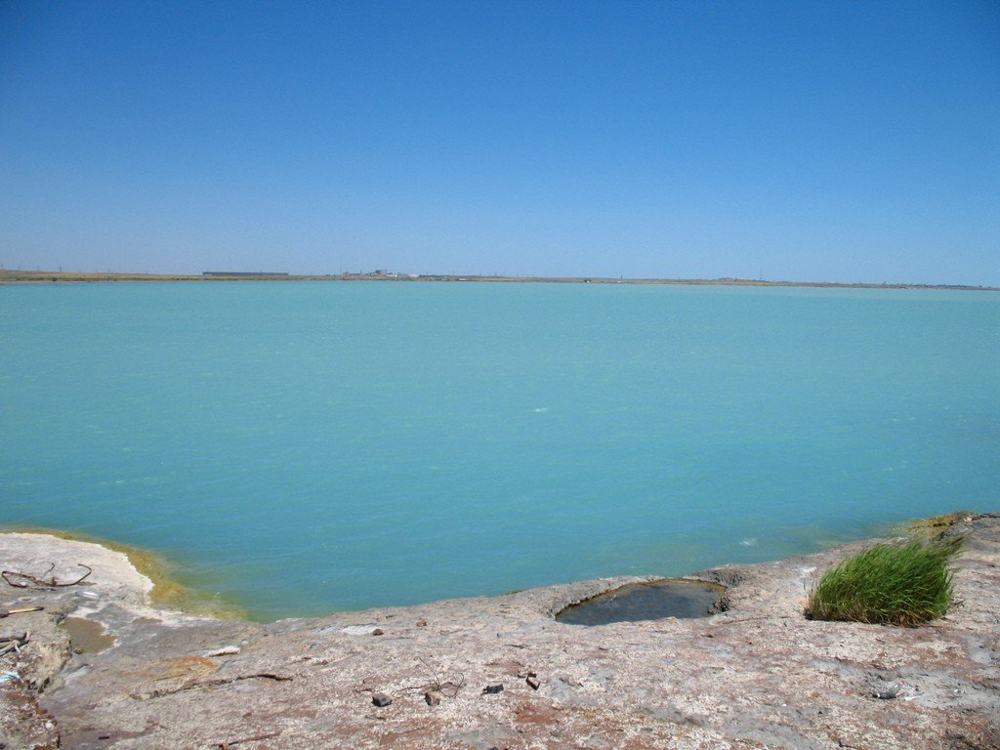
Озеро Балхаш
Малое Аральское море пополняется водами Сырдарьи. Это северная часть прежнего Аральского моря (озера), отделённая плотиной для сохранения воды. Остальная часть почти полностью высохла. После строительства плотины уровень озера постепенно поднимается, вода опресняется. В озеро выпущены осетры.
Реки
Иртыш протекает по северо-восточной части страны на протяжении 1,7 тыс. км. Его истоки находятся на стыке границ Китая и Монголии. В верхнем течении проходит сквозь озеро Зайсан, принимает несколько притоков. В Казахстане на Иртыше построены 3 ГЭС и мост в городе Семей.
Сырдарья — самая длинная река в Средней Азии, которая образуется после слияния горных рек Нарын и Карадарья. Питание снеговое с весенне-летним половодьем, когда выходит из берегов и затапливает пастбища на юге Казахстана. Часть речной воды разбирают Узбекистан и Таджикистан. В Казахстане на реке построены два водохранилища.
-

Река Иртыш
-
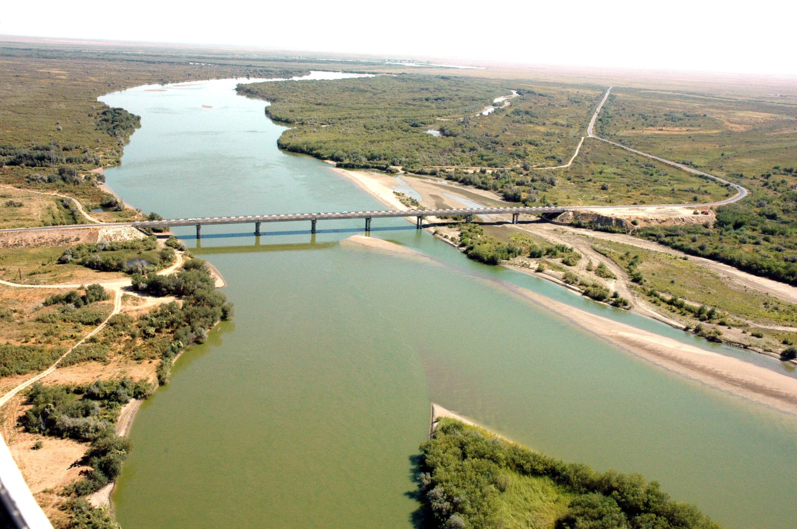
Река Сырдарья
В нижнем течении речная пойма с протоками используется под рисовые чеки, бахчи, сады.
Вулкан
Бектау-Ата — это горный массив, который находится в пустыне и представлен каменными глыбами самых разнообразных форм и размеров. Урочище Бектау-ата расположено в 60 километрах к северу от города Балхаш.
Самая высокая точка этой горы находится на высоте более 1200 метров и имеет очень простое название — Пик. Другие скалы горного массива благодаря своим причудливым формам имеют соответствующие названия — Сундук, Змея, Черепаха, Гриб.
Водопады казахстана
- Бурхан-Булак
-
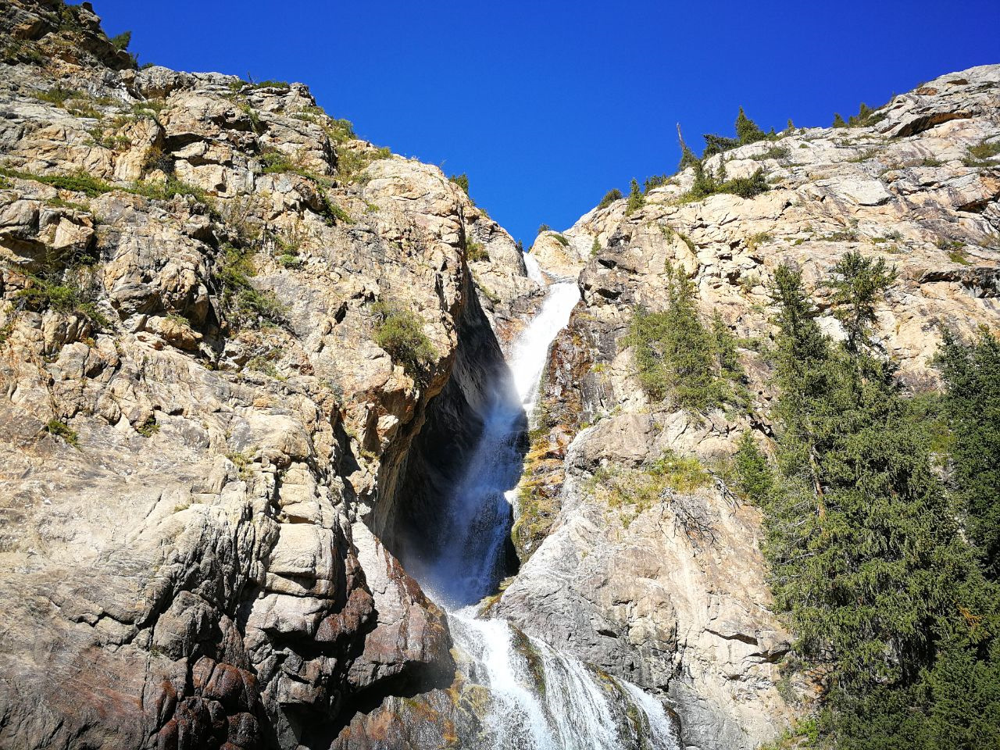
Водопад Бурхан-Булак
- Кокколь
-
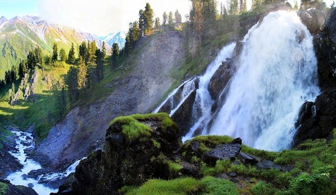
Водопад Кокколь
- Пиала
-
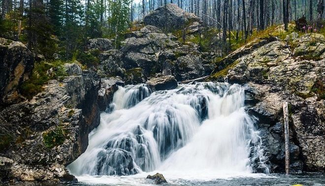
Водопад Пиала
- Черный водопад
-
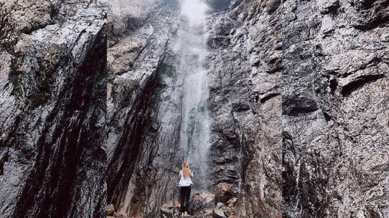
Черный водопад
- Кайракский водопад
-

Кайракский водопад
Состоит из 4-х каскадов, но видно только 3 потока, которые находятся на расстоянии 114 м. Он был образован на реке Кора и низвергается с высоты 168 м. Водопад Бурхан-Булак считается самым высоким в Казахстане, располагается в горах Джунгарского Алатау и относится к Алматинской области. В былые времена его считали священным, а сегодня он пользуется огромной популярностью у туристов. Водопад окружен красноватыми скалами, которые покрыты изумрудным мхом, и привлекает внимание мощными потоками, чей звук слышен на сотни метров. Приезжать сюда лучше в июле, когда таят ледники.
Он расположен на территории Катон-Карагайского национального парка, в верховье реки Большой Кокколь. Водопад окружен кедровым и еловым лесом, который создает особый микроклимат. Ширина каскада составляет 10 м, а высота равняется 80 м. У его подножья была образована ниша, примечательная отполированными стенами, где можно рассмотреть китайские рисунки и иероглифы. Мелкие капли, созданные потоками воды, ионизируют воздух и в солнечную погоду здесь появляется разноцветная радуга. Возле бассейна есть место для палаток. Добраться сюда можно на лошади или пешком.
Каскад образовался на реке Сарымсак, на высоте 2370 м над уровнем моря. Он располагается на территории Катон-Карагайского парка, примечательного кедовым лесом, где обитают белки, бурундуки, медведи и разнообразные птицы. Пиала считается небольшим водопадом, его потоки падают вниз с высоты 6 м. Тем не менее, он считается довольно красивым и по своей форме напоминает пиалу, откуда и пошло название. Шум, создаваемый водой, разносится на десятки метров, и является для туристов одним из основных ориентиров. Маршрут сюда имеет протяженность около 30 км, поэтому, чтобы не потеряться, добираться лучше в составе организованной экскурсии.
Он расположен в ущелье Туюу-Су, на высоте 2650 м над уровнем моря. Свое название каскад получил благодаря цвету скал, с которых его потоки устремляются вниз. Высота водопада составляет 30 м, а поток представляет собой ручей, приобретающий основную мощь летом, когда начинают таять ледники. Он лежит в скальной нише среди живописных горных вершин и своим видом напоминает колодец. Здесь создается особый микроклимат, благодаря чему туристы смогут увидеть, как луга сменяют ели и можжевельники. Среди растений встречается редкий цветок – Радиола, включенный в Красную книгу страны. Приезжать сюда стоит в конце весны или в начале лета, пока нет изнуряющей жары.
Он был создан природой примерно 10 тыс. лет назад, когда река Бозгуль смогла пробить в скале ущелье, образовав прекрасный водопад. Его потоки падают вниз с расстояния 55 м и примечательны водяной пылью, которую видно издалека. Она окутывает туристов, поэтому они намокают до нитки и стараются не подходить близко к каскаду. Полюбоваться достопримечательностью можно со специально оборудованной смотровой площадки, но стоит быть аккуратными, т.к. она практически всегда мокрая и скользкая. Каскад лежит в окружении дикой природой на высоте 2130 м.
Список гор Казахстана
На территории страны выделяется огромное количество горных систем. Наиболее знаменитые горы Казахстана представлены в списке ниже:
- Алтайские горы;
- Алтын шокы;
- Баянаульские горы;
- Каркаралинские горы;
- Тянь-Шань;
- Дегелен;
- Укок.
Растительный мир
Растительный мир Казахстана представлен порядка 6 тысяч видов высших растений. Около 380 из них занесены в Красную Книгу и охраняются законом. Познакомимся с самыми типичными представителями растительного мира Казахстана:
Саксаул – известный пустынный житель и характерный для широт Казахстана древовидный кустарник. Растёт до 12 м в высоту, имеет кривой ствол и широкую раскидистую крону. Своими крепкими корнями саксаул проникает вглубь земной коры, достигая грунтовых вод. Это единственное цветущее дерево Казахстана, выступающее естественной преградой для песчаных бурь. Саксаул весь год служит кормом для верблюдов. Его древесина очень прочная и отсюда второе название «железное дерево».
-
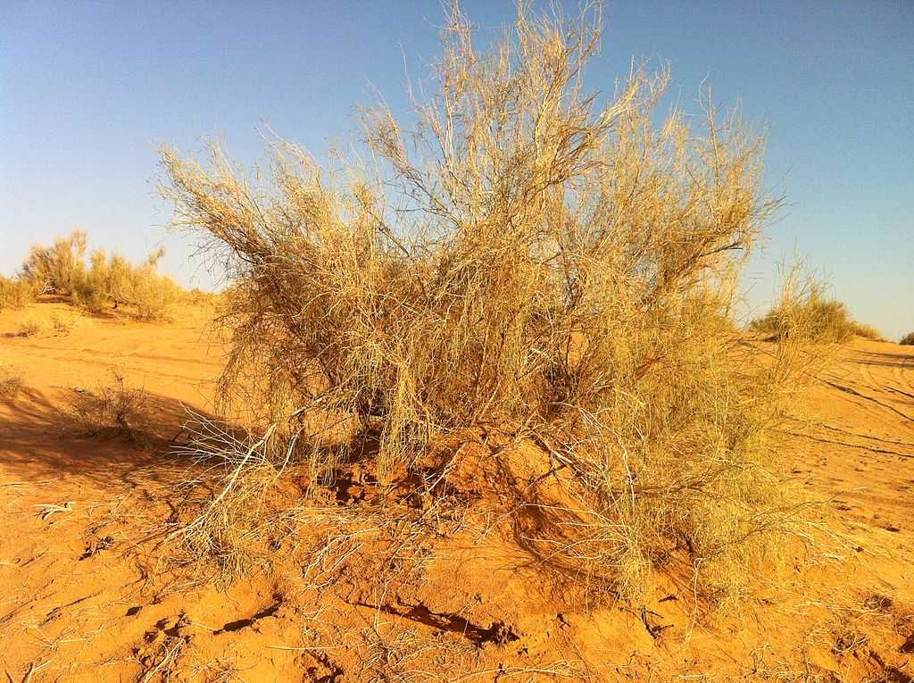
Саксаул
Джузгун – настоящий житель пустынь. Стелется колючий кустарник по камням и жаркому песку, достигая от 40 см до 7 метров в длину. Корни при этом могут расти горизонтально и вглубь до 30 метров, пробираясь до глубинных вод. Кустарник широко ветвится, а в апреле покрывается мелкими пахучими цветками. К концу мая на джузгуне появляются плоды, которые служат кормом для верблюдов и птиц. Из молодых побегов заваривают чай, который отлично утоляет жажду.
-
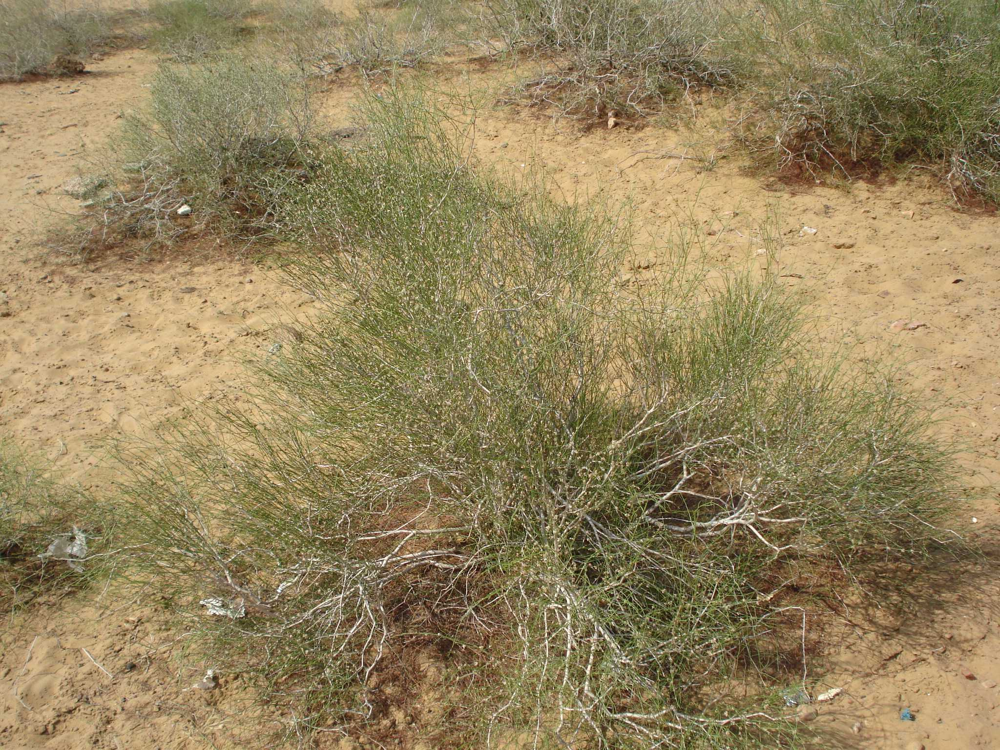
Джузгун
Тюльпан Борщова – с гордостью украшает степи и пустыни Казахстана, являясь визитной карточкой космодрома Байконур. Типичный представитель семейства Лилейных, тюльпан является многолетним растением, цветущим ранней весной. Невысокие крепкие стебли высотой до 25 см, бокаловидные бутоны желтого или красного цвета, плотные, мясистые листья. Гибкая плодоножка устойчива к ветрам степей и пустынь, при этом бутон легко поворачивается в разные стороны. Своё название тюльпан получил в честь российского ботаника Ильи Борщова. Цветёт рано и не долго около 12-14 дней.
Многие растения Казахстана, порядка 380 видов, близки к исчезновению и поэтому занесены в Красную книгу и охраняются законом. Вот некоторые из них.
-
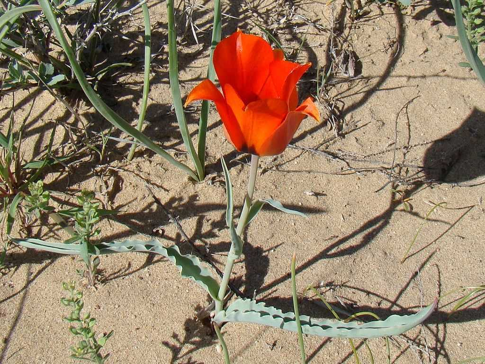
Тюльпан Борщова
Багульник болотный – один из представителей Красной книги. Имеет несколько народных названий и из-за своих особенностей активно используется в народной медицине. Багульник болотный или болиголов, он же клоповая трава или багно, представляет собой многолетний вечнозелёный кустарник с зонтичными цветами белого цвета на верхушке. Листья узкие, кожистые, завёрнуты книзу. Ствол высотой до 2 метров, опушенный.
Листья багульника богаты эфирными маслами, что делает его целебным против многих недугов. Растёт багульник в затенённых местах и нуждается в застойных водах. Яркое солнце ведёт к высушиванию почвы и гибели багульника.
-
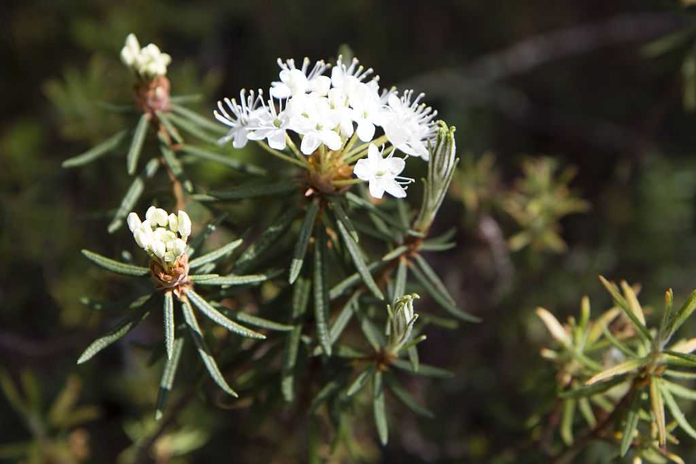
Багульник болотный
Любка двулистная (ночная фиалка) – достаточно высокое травянистое многолетнее растение с двумя большими листьями в основании. Второе название получила за приятный аромат, который к ночи усиливается. Длинная цветочная стрелка достигает до 65 см в высоту. Двулистная любка требовательна к почве и поэтому к разведению в домашних условиях непригодна. Встречается на лесных опушках и славится своими целебными свойствами, обладая противовоспалительным и обезболивающим действием.
-
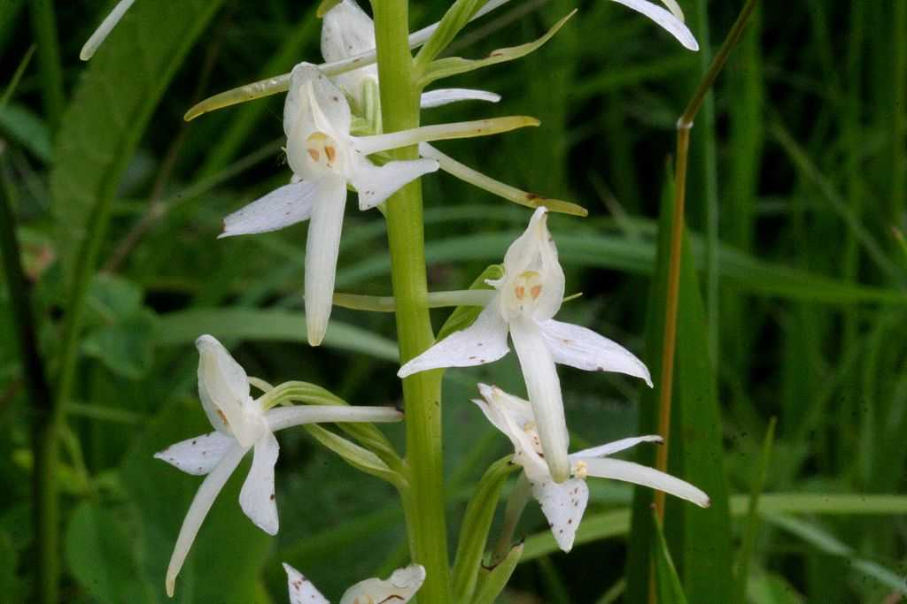
Любка двулистная
Толокнянка обыкновенная (медвежье ушко) – многолетнее кустарниковое растение, стелющееся длинной до 1,5 метров. Побеги ветвистые, листья толстые, мясистые, кожистые темно-зеленого цвета. Цветёт кустарник розовыми цветками кувшинчатой формы. На месте цветка формируется округлой формы красного цвета плод, с семенами внутри.
-
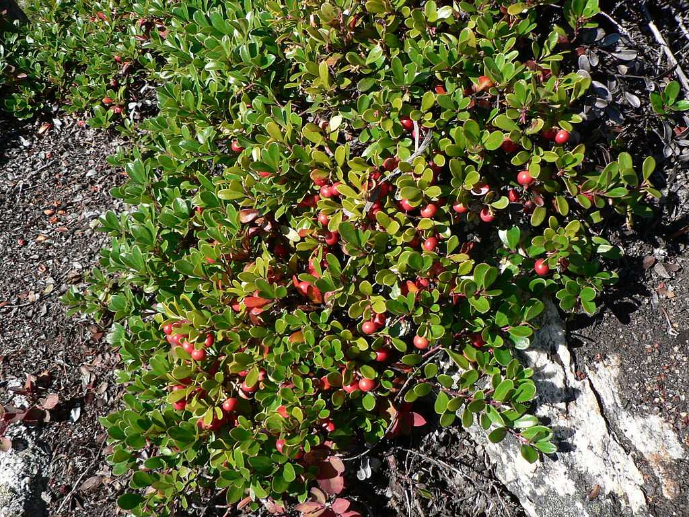
Толокнянка обыкновенная
Это всего лишь часть того растительного многообразия, каким представлена флора Казахстана. Горные массивы покрыты пышной растительностью, в то время как степные и пустынные зоны покрыты травами, колючими кустарниками и редкими уникальными растениями. Все эти жители хорошо приспособлены к жизни в сложных условиях пустынь, степей и горных вершин Казахстана.
Животный мир
Снежный барс
Самым известным, из диких животных Казахстана, является снежный барс, или ирбис (Uncia uncia). Он изображен на некоторых ранних скифских золотых украшениях, которым более 2000 лет. Поскольку снежные барсы являются одними из самых застенчивых и скрытных млекопитающих на планете, живущие в труднодоступных местах, их почти никто не видит. Его предполагаемая склонность к убийству домашних животных (овец и коз) часто вызывала опасения у сельских жителей. Однако неприступность обеспечила этому животному мифическую репутацию, которая будоражит воображение человека с незапамятных времён.
-
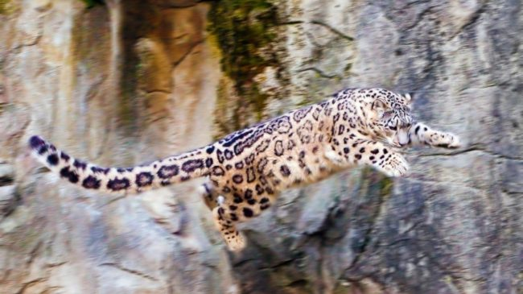
Снежный барс
Тянь-шанский бурый медведь
Другое важное крупное млекопитающее из горной местности Казахстана — тянь-шанский бурый медведь (Ursus arctos isabellinus), также известный как «красный медведь» из-за красноватого оттенка шерсти, который становятся все более редким. Однако некоторые туроператоры предлагают поездки в Аксу-Джабаглинский природный заповедник для просмотра этих редких животных, и такой бизнес хорошо мотивирует их защиту.
Помимо впечатляющего леопарда и тянь-шанского бурого медведя, на Алтае и в Тянь-Шане обитает множество других крупных млекопитающих, включая: альпийских горных козлов, сибирских оленей, евразийских рысей и росомах.
-
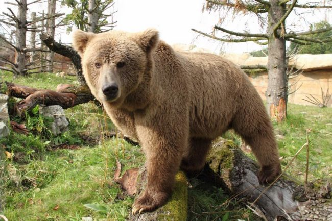
Тянь-шанский бурый медведь
Казахстанский горный баран
Казахстанский горный баран (Ovis ammon collium), по оценкам ученых, популяция этих животных все еще насчитывает около 10 000 особей. Они встречаются только на небольшом участке низких холмов вблизи города Караганда. Была запущена ограниченная и контролируемая программа охоты на этих диких баранов. Поскольку сборы за охоту находятся в районе нескольких тысяч долларов за животное, эти средства используются для сохранения дикой популяции. Муфлоны и Закаспийские уриалы — относятся к другим редким диким баранам, обитающих в степях и на невысоких холмах Казахстана.
-

Казахстанский горный баран
Сайга
Недавняя судьба сайги в Сибири, Средней Азии в целом и степи Казахстана очень печальна. Сайга была важным источником белка для народов Центральной Азии на протяжении веков и охота практически не влияя на ее численность. Однако, по оценке зоологов, за десять лет после 1993 года популяция сайгак на равнинах России и Казахстана сократилась с более миллиона особей до 30 000. Главной причиной упадка популяции послужила выборочная охота на самцов ради их рогов. На больших территориях остались лишь самки, что полностью нарушило соотношение полов и, следовательно, хрупкую систему размножения этих антилоп.
-
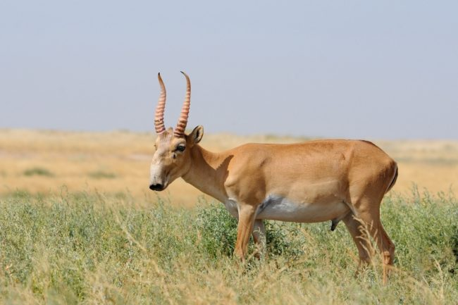
Сайга
Кабарга
Аналогичная сайгаку судьба угрожает кабаргам (Moschus mosvhiferus), обитающим в предгорьях Алтая, из-за спроса на их мускус для основы в парфюмерии. Лесной ареал обитания, особенно через границу в Сибири, находится под угрозой чрезмерной вырубки лесов, но основная опасность исходит от браконьеров.
-
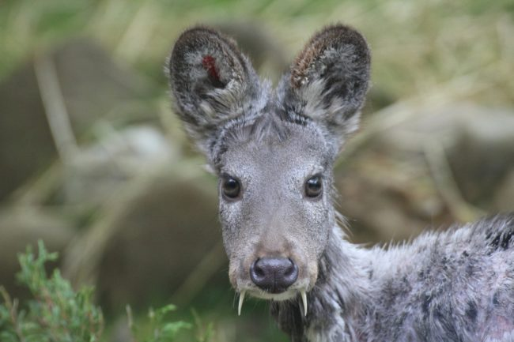
Кабарга
Каспийская нерпа
Единственным морским млекопитающим, встречающимся в Казахстане, является каспийская нерпа (Phoca caspica). Было подсчитано, что в начале XX века в каспийском море обитало около 1,2 миллиона особей, но к началу нынешнего столетия осталось лишь 400 тыс. Главной причиной сокращения популяции стала охота. В 2000 году также произошли крупномасштабные вымирания, которое поначалу объясняли загрязнением нефтью, но впоследствии выяснилось, что каспийские нерпы погибли от вируса, связанного с собачьей чумой.
-
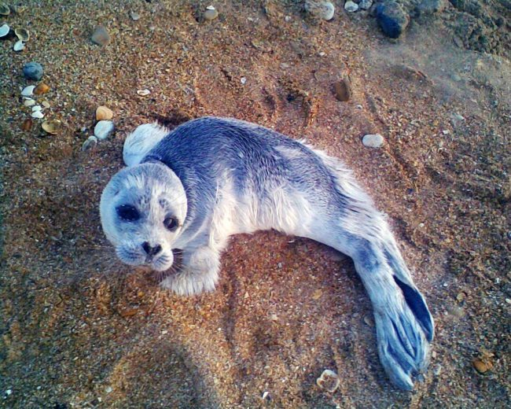
Каспийская нерпа
Корсак
Это интересное животное является близким родственником лисиц, но немного уступает им в размерах. Отличаются от своих сородичей корсаки широкими ушками и черным кончиком хвоста. Встретить его можно на территории степей и полупустынь. Предпочитает обитание в норах. В пищу употребляет грызунов, птиц, насекомых. Не брезгует падалью и всевозможными отбросами. Обладает свойствами многих хищников стойко переносить голод. Даже через две недели после голодовки активность животного не уменьшается. Шерсть корсаков очень ценится. Особенно она красива зимой. Из-за такой ее красоты корсаков становится все меньше. Животное взято под защиту государства.
-
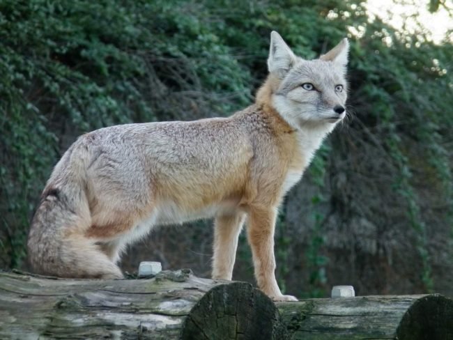
Корсак
Выхухоль
Это необычное животное жило еще в доисторические времена. Имея слабые, недоразвитые глазки, выхухоль ориентируется в пространстве исключительно по запаху. Большой нос-хоботок помогает ей находить пищу, а в хвосте расположены специфические (мускусные, пахучие) железы, маслянистый мускус которых выдавливается через многочисленные отверстия. Благодаря этому, хвост оставляет пахучий след, который словно навигатор указывает выхухоли обратный путь домой. Передние лапки у выхухоли маленькие, а задние большие. Ими выхухоль пользуется в воде как ластами. При небольшом размере в 18-20 сантиметров выхухоль выглядит очень необычно.
-
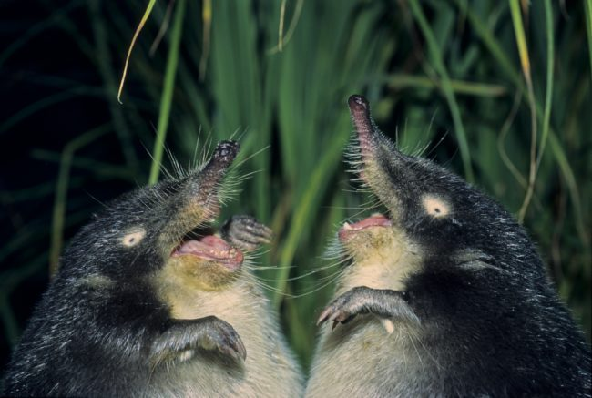
Выхухоль
Архар
Одним из самых распространенных животных гор Казахстана является архар – он один из самых крупных диких баранов. Тело среднего архара достигает в длину 150-200 см, его масса достигает до 200 кг. Самки обычно в два раза мельче самцов. Их голова украшена большими спиралевидными рогами. Окрас животных серо-бурый. Эти животные ведут стадный образ жизни. Питаются исключительно растительной пищей. Находятся под защитой человека.
-
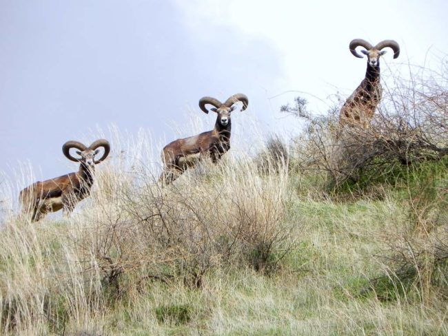
Архар
Белобрюхий стрелоух
Даже на картинках животных Казахстана этот родственник летучих мышей выглядит устрашающе. Людям всегда вселяли страх эти существа. Если присмотреться к стрелоуху, милым его трудно назвать. Отличается окрасом от своих сородичей, он у него светлый. Тело достигает в длину до 9 см, при весе 20 г. На фоне этого небольшого создания больше всего выделяются огромные уши, около 5 см в длину. Это обитатель пустынного и полупустынного региона. Ночует в скалах или человеческих постройках. Большую активность проявляет в ночное время. Его основной пищей являются паукообразные и насекомые.
-
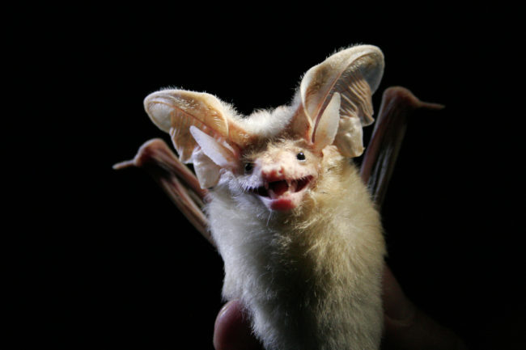
Белобрюхий стрелоух
Птицы
Географическое положения и разнообразия ландшафтов Казахстана, обеспечивают убежище около 500-м видам птиц, в том числе 396 гнездящихся видов, остальные — мигрирующие или зимующие виды. Некоторые из них являются знакомыми, но также могут встречаться прекрасные и редкие птицы, такие как: фламинго, краснозобая казарка, савка, белоголовый сип, черный гриф, могильник, балобан, тетерев-косач, белый журавль, cтрепет, кречётка, корольковая пеночка, белобрюхий рябок, чернобрюхий рябок, белокрылый жаворонок и многие другие.
Осетровые
Пресноводные рыбы часто не считаются важной составляющей дикой природы. Однако из-за значительного экономического значения для страны, осетровые являются одними из самых известных сортов рыб в Казахстане. Тем не менее, они также пострадали от чрезмерной эксплуатации и от неконтролируемой ловли, как это было в случае с сайгаками. Полагают, что в последние годы исчезло два важных подвида осетровых: шип и сырдарьинский лопатонос. Тем не менее, есть информация, что экземпляры шипа существуют в неволе и могут быть вновь введены в дикую природу.
Природные ресурсы
Казахстан очень богат разнообразными природными ресурсами. Это связано с большой площадью страны, а также с ее долгой геологической историей. Несмотря на то, что ресурсы распределены неравномерно, их исключительное разнообразие поражает. Правительство Казахстана достаточно грамотно распоряжается ими, и благодаря этому страна заняла должное место на мировом рынке.
Водные ресурсы
Говоря о водных ресурсах, следует упомянуть, что расположены они неравномерно. Наибольшая часть территории государства относится к внутренним бассейнам, то есть здесь не имеется прямого выхода к океану.
Важнейшими источниками водных ресурсов являются:
- Ледники — это долгосрочные пресноводные источники, которые, в основном, питают реки.
- Реки изрезают равнинный и степной Казахстан вдоль и поперек, самыми крупными из них являются Сыр-Дарья, Ишим, Урал и Иртыш.
- Озерный ресурс расположен неравномерно, и количество озер постепенно уменьшается с севера на юг. Самыми крупными озерами в центральной части Республики являются Балхаш и Тенгиз.
- В Казахстане есть два моря — это Каспийское и Аральское. Дополнительным источником являются подземные воды расположены внутри множества впадин и трещин, находящихся глубоко в земной коре.
-
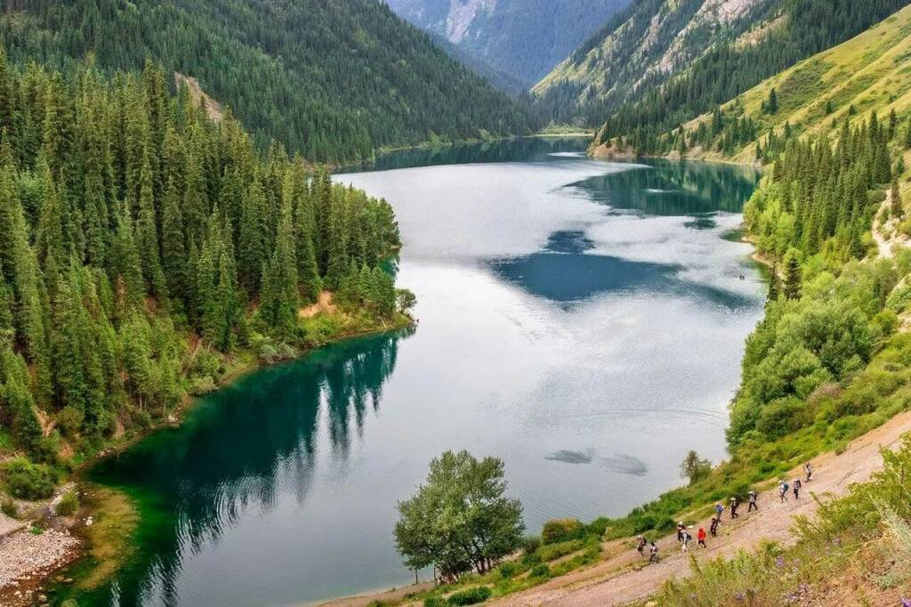
Кольсайские озёра
Земельные ресурсы
По размеру своей площади Казахстан занимает девятое место в мире. Государство обладает обилием разнообразия земельных ресурсов, включая лесостепные и степные зоны, полупустынные и пустынные.
Плодородный чернозем расположился относительно неширокой полосой, в северной и северо-западных частях страны, где наиболее благоприятные погодные условия. Восточный и центральный регионы считаются рискованными для возделывания земель из-за засушливого климата, который повторяется из года в год. В южной части страны расположились полупустынная и пустынная зона, поэтому земледелие тут может быть лишь орошаемым.
Лесные ресурсы
Помимо всех вышеперечисленных природных богатств, в Республике также имеются лесные ресурсы, однако, не в таких больших количествах (учитывая специфику географического расположения региона). На территории компактно расположились два больших леса и боры.
С восточной части страны, и до западной, тянется северная часть хребтов Тянь-Шаня. Эта горная цепь укрыта лесами, которые состоят из редко встречающихся в природе пород деревьев.
Между рекамии Бухтарма и Убой расположился величественный Алтайский лес. Горы тут покрыты лесами смешанных пород.
Также следует сказать об Аманкарагайском бору, который расположен в Костанайской области. Его территорию пересекают небольшие, но многочисленные озера. Бор снабжает древесиной все местное население, что проживает близ него.
Лес Аракарагай — это огромная площадь, густо покрытая растительностью, она занимает приблизительно 600 кв. км. Здесь ведется активная заготовка дерева.
Жанажолский бор — это реликтовый лес, он охраняется и имеет общую площадь всего 9 га. Возраст отдельных сосен здесь может достигать сотни лет.
-
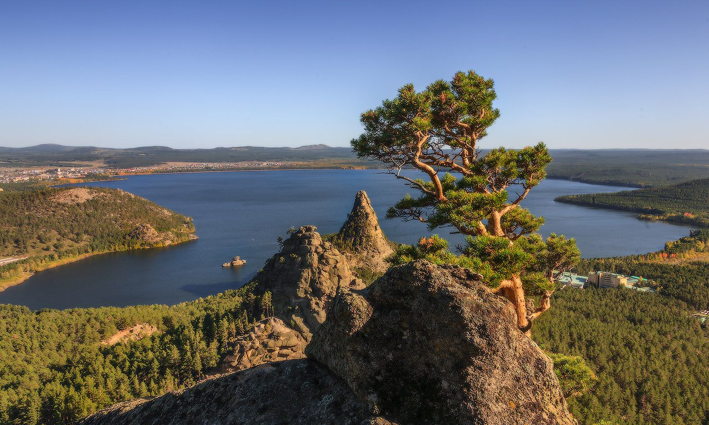
Озеро Боровое
Минеральные и нефтяные ресурсы Казахстана
Одной из основных экономических отраслей страны является добыча нефти. Самые важные месторождения нефти — Кашаган, Тенгиз, Карачаганак, Узень. Многие из этих месторождений только разрабатываются, однако, все они имеют огромный потенциал и приносят в бюджет страны огромный доход.
Также в стране активно добываются разнообразные минералы. Земли Казахстана богаты ископаемыми, а страна занимает лидирующие позиции во всем мире по запасам барита, цинка и вольфрама. Также добывают медь, почти вся она экспортируется.
На данный момент здесь открыто десять бассейнов по добыче бурого и каменного угля.
Помимо всех вышеперечисленных, в стране добываются уран и золото, полиметаллы, боксит и марганец, а также хромит.
Такие богатые природные ресурсы Республики привлекли множество инвесторов из-за рубежа, что помогает экономике страны.
Отдых
Основные туристические направления
Знакомство со страной удобнее начинать с южных областей, в состав которых вошли такие крупные города, как Алма-Ата, Шымкент, Тараз, а также культовая достопримечательность космической эры – Байконур. Держаться южного направления стоит в первую очередь экотуристам, альпинистам и горнолыжникам, потому что увидеть такое разнообразие природных зон не получится больше ни в одном уголке Казахстана, за исключением разве что восточной его части. Здесь и мистический заснеженный Тянь-Шань, и бездонные тектонические озера, и выжженные щедрым азиатским солнцем пустыни с инфернальными каньонами.
Кстати, известный далеко за пределами страны высокогорный спорткомплекс «Медео» находится как раз в окрестностях Алма-Аты. От дефицита культурно-исторических достопримечательностей эта часть Республики тоже не страдает. Мечети и мавзолеи, древние города и участок Великого шелкового пути – эти и другие туристические сокровища следует искать именно на просторах Южного Казахстана.
-
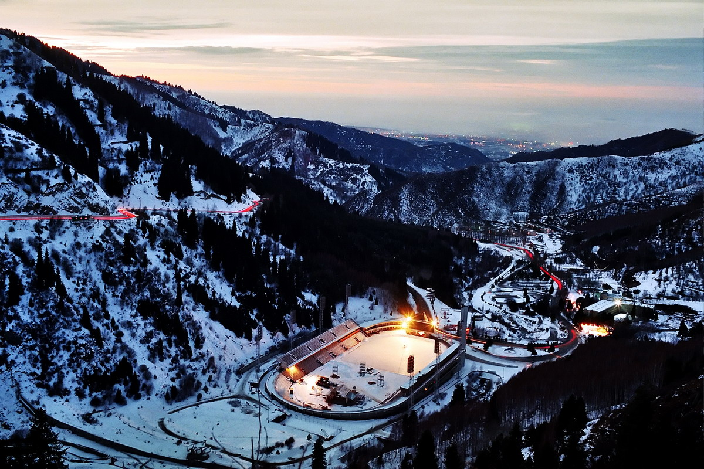
Спорткомплекс «Медео»
-
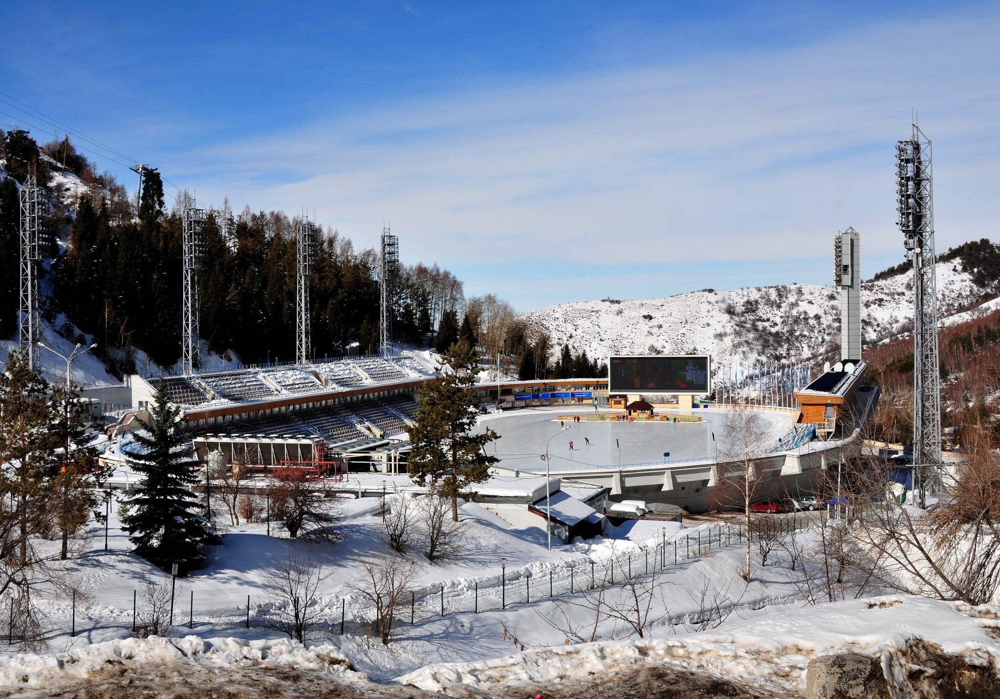
Спорткомплекс «Медео»
Север страны – заповедная зона, край природных парков, курортов и лечебных озер, в котором реально забыть о существовании цивилизации. Впрочем, совсем диким местом Северный Казахстан никак не назовешь. Столица страны Нур-Султан, Павлодар, Костанай – эти и другие культурные центры уже давно обеспечили региону репутацию одного из самых привлекательных туристических направлений.
Западный Казахстан – это одновременно и главный кормилец страны (почти вся нефть добывается именно в западных регионах), и удивительный озерный край. Ехать сюда стоит уже ради того, чтобы отдохнуть на берегу Каспийского моря (район города Актау) и пофотографироваться на фоне настоящих древностей. Старинные крепости и подземные мечети, монументальные мавзолеи и руины доисторических городов – чтобы запечатлеть на камеру достопримечательности Западного Казахстана придется потратить не день и даже не неделю.
Самое интересное местоположение, с точки зрения экотуриста, у восточной области страны, «вставшей» на пути таких держав, как Россия, Китай и Монголия. Вот где настоящий «калейдоскоп» природных зон и контрастных ландшафтов: пологие склоны Южного Алтая переходят в живописные котловины, а песчаные пустыни сменяются райскими пастбищами, как из рекламы альпийского шоколада. Ехать в восточный Казахстан стоит, конечно, не только ради интересных фонов для селфи, но и чтобы испытать настоящее единение с природой в местных заповедниках, которых тут целых три.
Достопримечательности, которые стоит посетить
-
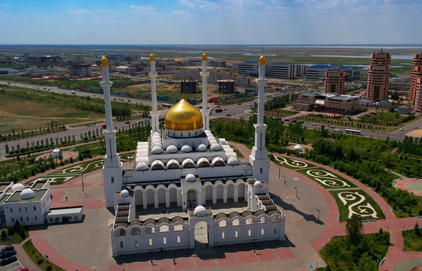
Мечеть Нур-Астана
-
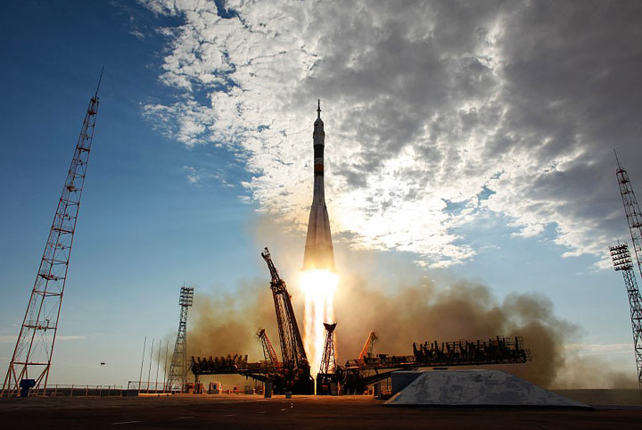
Космодром Байконур
-
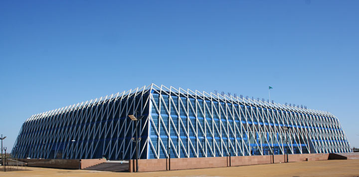
Дворец Независимости в Астане
-
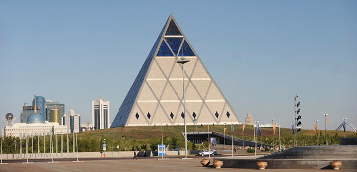
Дворец мира и согласия в Астане
-
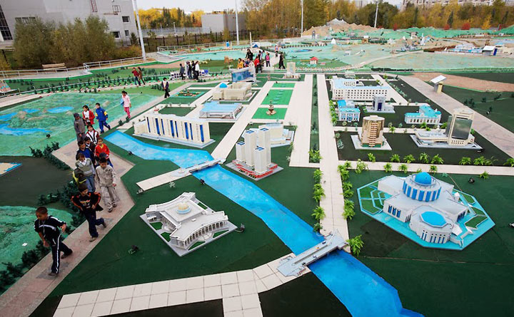
«Атамекен»
-
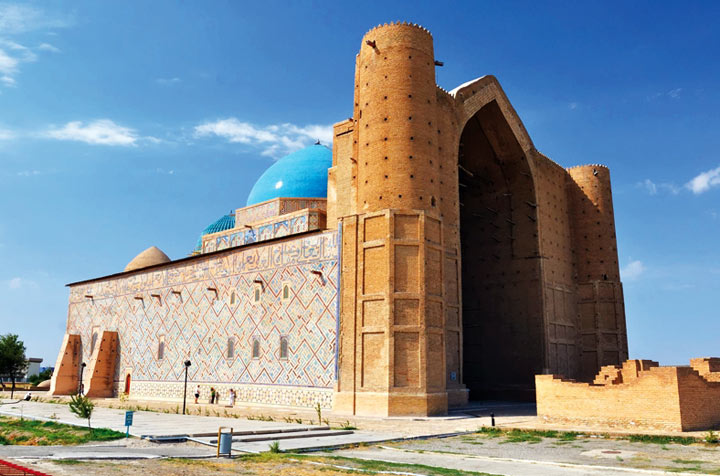
Мавзолей Ходжи Ахмеда Ясави
-
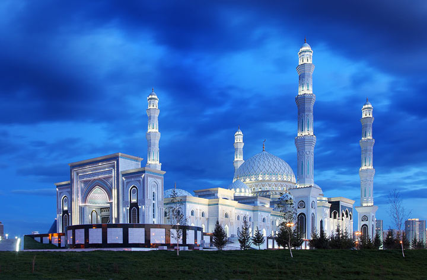
Мечеть Хазрет Султан
-
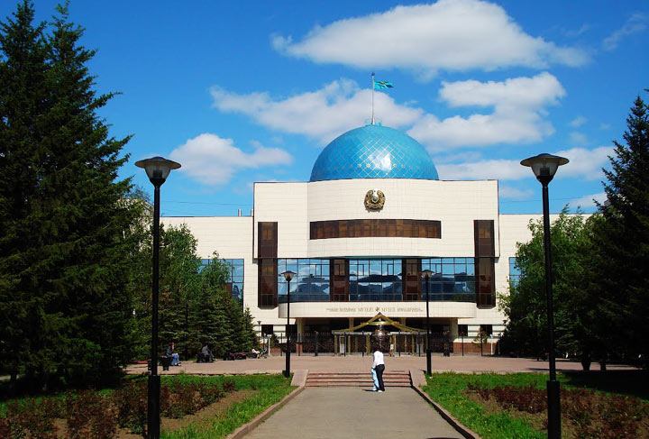
Музей первого президента Республики Казахстан
-
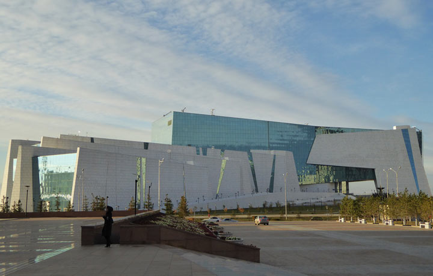
Национальный музей Республики Казахстан
-
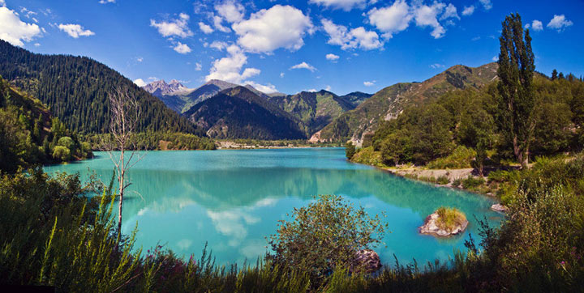
Озеро Иссык
-
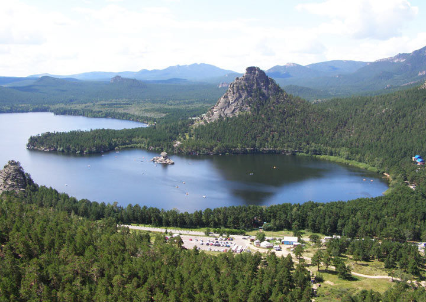
Озеро Боровое
-
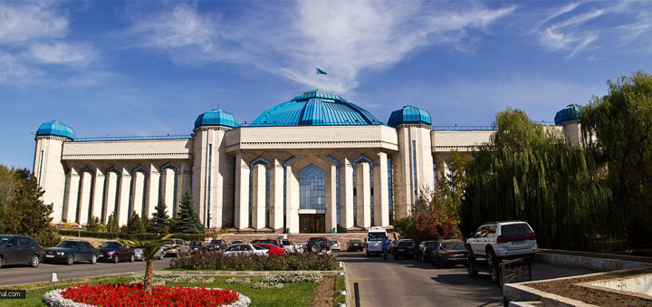
Центральный государственный музей Республики Казахстан
-
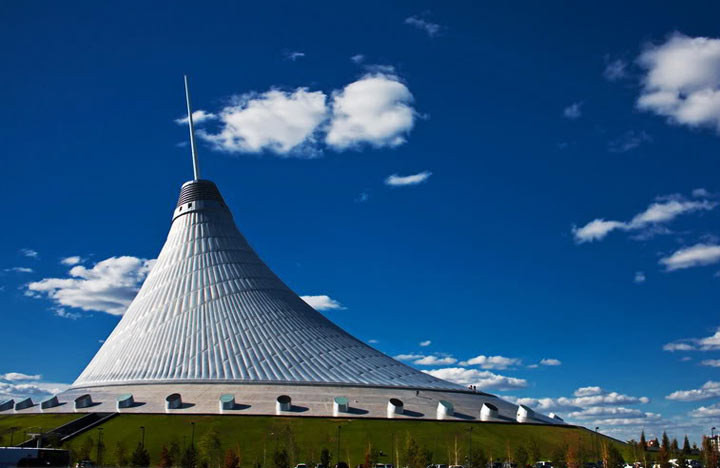
Хан Шатыр
-
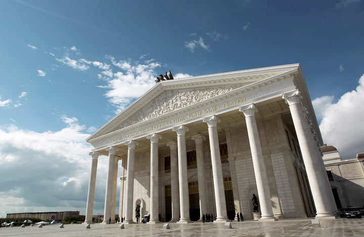
Театр оперы и балета «Астана Опера»
Кухня
Особенности национальной кухни
Казахские традиционные блюда по большей части основаны на мясных и молочных продуктах. Другие ингредиенты, а именно морепродукты, овощи, фрукты, рыба, сладости и выпечка, добавились позже и уже больше относятся к современной кухне этой страны.
Но преимущественно в казахской национальной кулинарии преобладают мясные блюда. Для их приготовления применяются четыре вида мяса – баранина, верблюжатина, конина и говядина. Из свинины здесь абсолютно не готовят, так как ислам этого не позволяет.
Исторически сложилось, что казахи вели кочевнический образ жизни, домашнюю птицу они не выращивали. Птица появлялась на столах только как дичь, которую подстрелили охотники.
Рыбные блюда свойственны определенным регионам Казахстана, которые располагались на побережьях, возле различных водоемов.
Среди хлебобулочных изделий популярны различные лепешки, как правило, запекаемые с помощью сковороды и на углях (шельпек, баурсаки, таба-нан, тандыр-нан).
Среди напитков в особом почете черный чай.
- Манты
-
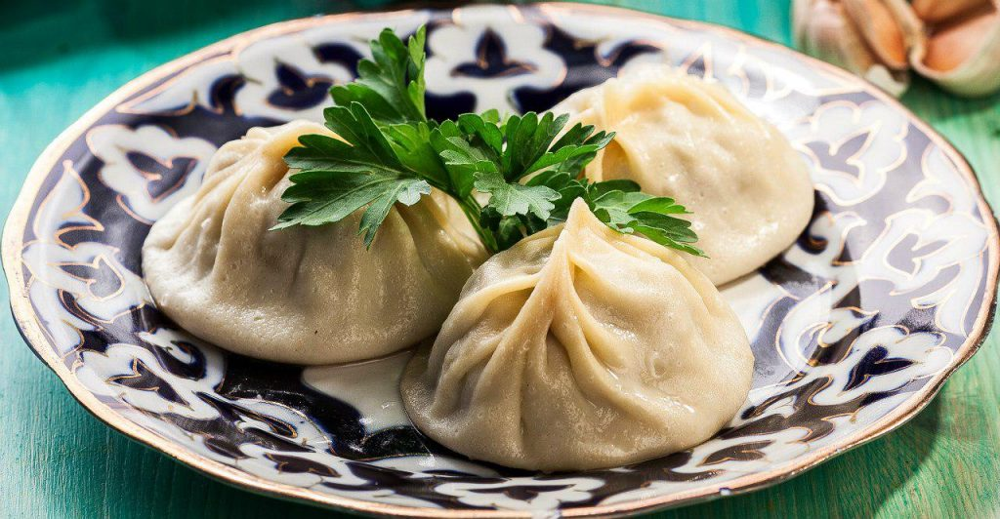
Манты
- Бешбармак или «пять пальцев»
-
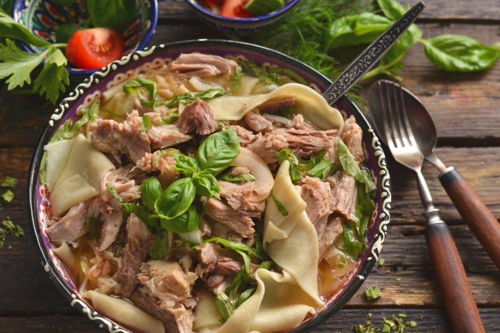
Бешбармак
- Куырдак
-
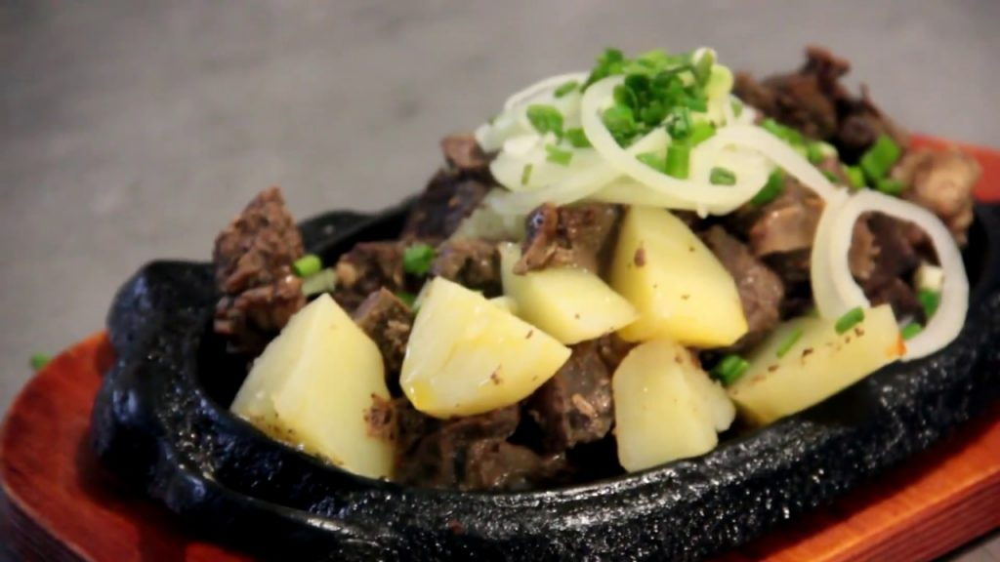
Куырдак
- Коктал
-
Коктал
Название этого мясного блюда переводится с тюркского как «начиненная голова». Манты представляют собой измельченное мясо, завернутое в тонко раскатанное тесто. Готовят их на пару. На казан, в котором кипит вода, устанавливается многоярусный поднос из дерева. Конструкция называется мантоварка. Чаще всего для фарша используется баранина в сочетании с курдючным или нутряным жиром. Вариации начинки бывают разными. Мясо комбинируют с тыквой, картофелем или луком.
Это блюдо, как правило, готовят для приема важных и дорогих гостей, на большие праздники. Бешбармак – это сочетание отварного мяса и лапши.
Согласно традиций, мясо должно быть мелко нарезано. Крупные куски в блюде считаются как знак неуважения к гостю либо как отсутствие навыков приготовления этого национального казахского блюда.
Лапша, в свою очередь, должна быть в форме небольших прямоугольников. Бешбармак переводится как «пять пальцев», ведь блюдо принято кушать без использования столовых приборов.
Название блюда переводится с казахского «куыру», что означает «жарка». Вариации названия блюда – куурдак, куырдак, ковурдак.
Это традиционное жаркое из потрохов с картофелем и луком. Для куырдак чаще всего используют ломтики печени, легких, селезенки, почек, кишок, печени и других субпродуктов. Традиционно блюдо подается гостям перед бешбармаком. В современной казахской кулинарии в куырдак, кроме картофеля и лука, нередко добавляют другие овощи (морковь, тыкву), чеснок, зелень, специи (перец, лавровый лист) и прочее.
Казахская кухня преимущественно состоит из мяса, но рыбные блюда все же есть. Одним из таких можно назвать коктал, то есть рыба, закопченная с овощами.
Особенность приготовления блюда в том, что рыба не очищается от чешуи, а просто разрезается по хребту. После чего рыбу, словно развернутую книгу, кладут внешней стороной на решетку, называемой коктальницей. На внутреннею сторону выкладывают порезанные овощи – помидоры, лук и т.д. Очищенный картофель выкладывают целиком вокруг тушки.
Для коктала используют рыбу весом не менее 3-5 кг. Копчение чаще всего делают на веточках или опилках яблони. В давние времена предки готовили рыбу на ветках ивы – нанизывали или клали сверху. Именно поэтому дословно название блюда коктал переводится с казахского как «ива».
Напитки из молока
Кисломолочная продукция занимает второе место после мясных кушаний в казахской кухне. Наиболее популярными напитками являются:
- кумыс – забродившее молоко кобылы;
- сары-май – сливочный жир;
- шубат – кислое молоко верблюдицы, отличающиеся более высокой жирностью, чем кумыс;
- айран – разновидность кефира;
- коже – молочный напиток с крупой;
- каймак – густые сливки;
- уыз – творог, имеющий сладкий привкус. Готовится путем варения молозива;
- курт – сухой творог из овечьего молока с солоноватым привкусом.
Традиционное чаепитие
Ни одна трапеза не обходится без чая. В Казахстане этот напиток потребляют в большом количестве.
-
Традиционное чаепитие
- https://ru.wikipedia.org/wiki/География_Казахстана
- https://ru.wikipedia.org/wiki/Климат_Казахстана
- https://сезоны-года.рф/природные%20ресурсы%20Казахстана.html
- https://animals-mf.ru/zhivotnye-kazaxstana/#jivotnyh-kazahstana
- https://wikiway.com/kazakhstan/#gl6
- https://kazakhstan.travel/tourist-help/ru/time_zones
- https://natworld.info/nauki-o-prirode/priroda-zhivotnye-i-rasteniya-kazahstana-opisanie-i-foto
- https://obrazovaka.ru/geografiya/prirodnye-zony-kazahstana.html
- https://obrazovaka.ru/okruzhayushhiy-mir/reki-i-ozera-kazahstana.html
- https://womanadvice.ru/vodopady-kazahstana
- https://syl-ru.turbopages.org/syl.ru/s/article/323988/kazahstan-goryi-i-vershinyi-geografiya-kazahstana
- https://kazakhstanlife.ru/kazaxskie-nacionalnye-blyuda/
- https://www.topkurortov.com/dostoprimechatelnosti-kazaxstana/